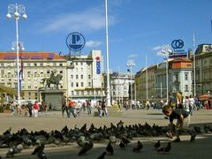

Dolazite u Zagreb? Odsjednite kod nas!
{kind=link}
Apartmani Deković se nalaze u širem centru Zagreba. Srebrnjak i cijeli okolni kvart su poznati po svojoj tišini i miru u kojem doslovno možete osjetiti stari duh Zagreba koji je gužva i vreva izgurala iz strogog centra grada.
Našim uslugama se koristi vrlo širok profil ljudi. Od turista, poslovnih posjeta, do ljudi koji dolaze u Zagreb radi liječenja ili nekih drugih obaveza. Svi cijene to što nakon dana punog obaveza za 10 minuta dolaze u miran kvart koji je blizu centra, a opet dovoljno odmaknut da se mogu u miru odmoriti nakon napornog dana.
Ljudi se najčešće radije odlučuju za ovakav način smještaja jer je povoljniji i fleksibilniji od hotelskog. Dok su hotelske usluge normirane i imaju fiksni cjenik kod nas je moguće dogovoriti razne dodatne usluge kao što su češće čišćenje, pranje rublja, bežični internet, smještaj kućnih ljubimaca i razne druge ovisno o potrebi.
Kako do nas?karta
Lako. Neovisno o tome dolazite li u Zagreb svojim automobilom ili javnim prijevozom, lako ćete nas naći. Srebrnjak je ulica koja vodi od Bijeničke ceste na sjeveru prema centru grada, Petrovoj ulici i Kvaternikovu trgu. U neposrednoj blizini Srebrnjaka se nalazi velik broj zagrebačkih bolnica (Dječja bolnica Srebrnjak, Vuk Vrhovac, K.B. Merkur, Zarazna bolnica Fran Mihaljević, Plućna klinika Jordanovac, K.B. Rebro, Zajčeva, Petrova, Šalata), te studentski dom Lašćina. Na drugoj strani blizu su Gupčeva zvijezda i Gornji grad. Ako dolazite osobnim automobilom lako ćete nas pronaći, a ako se koristite gradskim prijevozom tada će biti još lakše: autobus broj 201 (ovdje pogledajte vozni red) vozi od Kaptola do Petrove ulice preko Srebrnjaka. Tim autobusom ćete od naše kuće do Kaptola i Trga bana Jelačića stići za 10 minuta.
Preciznije upute ćete naći na stranici Lokacija. Osim toga, za sva pitanja i informacije se slobodno obratite na bilo koji od navedenih telefonskih brojeva u desnom stupcu teksta.
{kind=link}